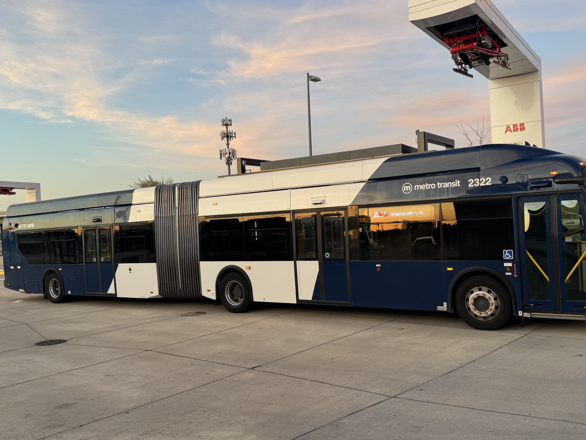

Madison’s Electric Bus Revolution Is Changing the Way the City Moves
July 26, 2025 | Matthew Barton

Madison, Wisconsin is in the middle of a quiet revolution—literally. The city is trading the rumble of diesel engines for the smooth hum of electric motors, as it transforms its public transportation system with a growing fleet of electric buses. What started with just a few test vehicles has turned into a full–on overhaul of how Madison moves. And it’s not just about cutting emissions or getting new buses. It’s about building a cleaner, faster, more efficient system that works better for everyone–students, commuters, low-income riders, and the city itself. A Small Start with Big Intentions Madison took its first steps toward electrification in 2020 by adding three electric buses to its Metro Transit fleet. These 40-foot buses from Proterra were rolled out as a test: How far could they go on a charge? Would they handle Wisconsin winters? Would riders even notice the difference? The answers came quickly: yes, yes, and yes. The pilot was a success. Maintenance costs were lower than expected, the buses ran quietly and cleanly, and drivers and riders alike gave positive feedback. That early success gave the city the confidence to go bigger. Much bigger. Going All-In: A Fleet Upgrade Backed by Big Funding Fast forward a couple of years, and Madison is now in the process of replacing a significant chunk of its fleet with 60-foot articulated electric buses—some of the most advanced public transit vehicles on the market. Thanks to more than $48 million in federal funding from the Bipartisan Infrastructure Law and other grants, Metro Transit was able to purchase 62 of these electric giants from New Flyer. These articulated buses hold up to 120 passengers, have doors on both sides for quick boarding, and don’’t emit a single puff of exhaust. Each electric bus is expected to save the city 250,000 gallons of diesel fuel annually and cut maintenance costs by about $125,000 over its lifetime. Even more important, each one prevents about 135 metric tons of greenhouse gases from entering the atmosphere every year. That’s a serious environmental win. Electric Buses Powering the New BRT System The heart of Madison’s transportation future is its new Bus Rapid Transit (BRT) system, branded as MetroForward. Think of it as a light rail system—but with buses that look sleek, run in dedicated lanes, and stop at high-tech stations with real-time arrival screens. The first BRT line, Route A, launched in September 2024 and runs east to west across the city—from Sun Prairie to Junction Road. It’s fully electric. These buses don’t just run frequently (every 15 minutes), they also bypass traffic with signal priority and bus-only lanes. The goal: faster, more reliable transit that feels like a major upgrade from what came before. Route B is next—a north-south line serving the airport and South Transfer Point. While it’s already running electric buses, it still needs some upgrades to its charging stations before it can officially become part of the BRT system in 2028. Plans are already in motion to make that happen. Campus Joins the Movement This shift to electric isn’t just happening downtown. The University of Wisconsin–Madison has also joined the movement. In spring 2024, the university announced it would launch its own articulated electric buses on campus by fall. With thousands of students, staff, and visitors moving around daily, these emissions-free buses will make a big difference—especially in reducing congestion and noise in campus areas. But it’s also a practical move. The campus buses are giving drivers valuable experience operating larger articulated models, which helps the city as it continues expanding its electric fleet. Charging Up: Behind the Scenes of an Electric Fleet Replacing diesel buses with electric ones sounds simple enough—just plug them in, right? In reality, it’s a major logistical effort. Madison has built out a new network of charging stations across the city, both at central depots and on the road. Along Route A, for example, there are now four fast-charging pantograph stations that top off buses while passengers are boarding. That way, buses can stay in service all day without returning to the depot. More chargers are on the way, especially along Route B, which still requires some buses to detour for a recharge. By 2025, those mid-route charging upgrades should be in place, making all-day electric service the norm—not the exception. Better Buses, Better Experience So how do these new electric buses stack up in terms of the ride? For drivers, the adjustment has been pretty smooth. Even though these buses are longer and articulated, drivers say the steering is intuitive and the ride is quieter and less jerky. Passengers have noticed the difference, too. The buses are quiet—really quiet. And smoother. And more comfortable, with wider aisles, better wheelchair access, and even interior bike racks. Plus, there’s something refreshing about knowing your commute isn’t contributing to air pollution or greenhouse gas emissions.To build public excitement, Metro Transit even hosted public events where riders could tour the buses, talk to drivers, and learn how the charging tech works. These events helped demystify the technology and showed residents where their tax dollars—and federal grants—were going. Equity and Access: Making Transit Fairer While the environmental benefits of electric buses are obvious, Madison’s approach to electrification is also focused on equity. As part of its MetroForward redesign, the city made sure underserved neighborhoods—especially on the north and south sides—got faster, more reliable service.In many cases, these neighborhoods had historically been underserved by public transit. By reworking routes and focusing on BRT corridors that serve these communities, Madison is closing those service gaps. And importantly, fares have stayed the same. Riders aren’t paying more for cleaner, better transit. This isn’t just a green initiative—it’s also a justice initiative. A Bit of History Repeats Itself Here’s something many people don’t know: Madison used to have an electric streetcar system over a hundred years ago. From the early 1900s through the 1930s, electric trolleys ran through the city until they were phased out in favor of diesel buses and cars. So in some ways, Madison is coming full circle. But this time, the electric vehicles are smarter, more flexible, and better suited for the needs of a modern city. No tracks required—just charging stations, good planning, and community buy-in. What’s Next? The city's long-term transit plan is just getting started. Madison is investing about $14 million a year into electric vehicle infrastructure and replacements to keep momentum going. The goal isn't just to electrify Metro Transit—it's to build a transportation network that's resilient, scalable, and powered by clean energy. Future projects include:
The Dane County Electric Vehicle Plan outlines many of these goals and emphasizes long-term reliability—both for the power grid and the transit system itself. The Bottom Line Madison isn’t just swapping out old buses for new ones. It’s reimagining how a city can move—cleanly, quietly, and efficiently. And it’s doing it in a way that’s financially smart, environmentally sound, and socially inclusive. With one-third of its fleet already electric, a fully operational BRT line, and more infrastructure on the way, Madison is setting an example for other cities looking to do the same. The ride is smoother. The air is cleaner. And the future? It’s fully charged. |